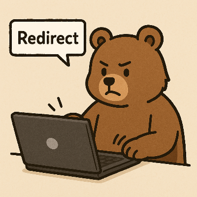

Redirect Practice Page
リダイレクトの動作確認用ページ。
301
,
302
,
303
,
307
,
308
の確認

Image created with DALL·E by OpenAI.
Redirect Links
301 Moved Permanently
302 Found
303 See Other
307 Temporary Redirect
308 Permanent Redirect